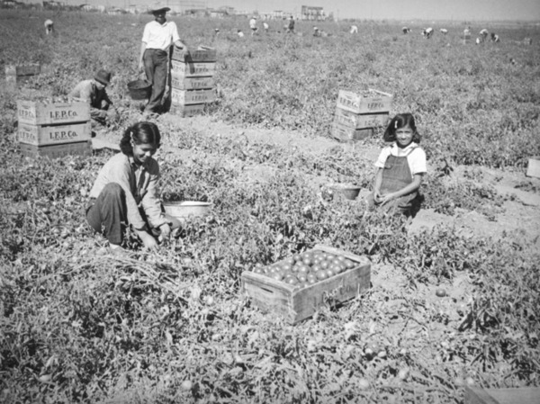

ASIAN AMERICANS AND MEXICANS FARMING IN SAN FERNANDO VALLEY, CALIFORNIA
Source: KCET
Numerous Asian Americans, especially the Chinese and the Japanese, immigrated to the United States of America for better working conditions and a chance to start over. While they may have had degrees, the only jobs that they were allowed to take in an agricultural state, such as California, were menial jobs, such as working in a farm, manually plowing the field and picking fruits and vegetables once they were ripe. According to Community Education Television, in the San Fernando Valley in the 1930s, only 1500 Mexicans lived and worked in the valley, as compared to the 3,177 Japanese immigrants workers (KCET, 2014).